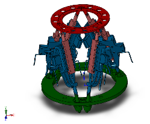

Export a Stewart Platform from SolidWorks Software
In this example, you export a SolidWorks™ CAD assembly that represents a Stewart platform. The export procedure generates one XML file and a set of geometry files that you can import into Simscape™ Multibody™ to generate a new model.
The example begins with a procedure to export the CAD assembly. Information on CAD files and CAD Export follows the export procedure. To import the robot assembly into a Simscape Multibody model, see Import a Robotic Arm CAD Model.
The following figure shows the Stewart platform assembly you export in this example.

Example Requirements
To successfully complete this example, you must meet the following requirements:
Have the latest version of Simscape Multibody Link installed on your machine.
Have completed the linking procedure for your SolidWorks installation. The linking procedure adds a Simscape Multibody Link add-in to the SolidWorks installation.
Have access to the Stewart Platform example files that accompany the Simscape Multibody Link installation. See About the Example CAD Files.
Open the Assembly Model
Before you can export the robot assembly, you must load the assembly in a SolidWorks session.
Open SolidWorks on your machine.
Select File > Open
Navigate to the file directory that contains the robot CAD files.
Note
The directory that contains the robot CAD files for the SolidWorks platform is
<MATLAB Root>\toolbox\physmod\smlink\smlinkdemos\... ...solidworks\stewart
Select file
stewart_platform.SLDASM.Click Open.
The CAD platform opens the Stewart platform assembly.
Export the Model
Once you successfully open the CAD assembly in your SolidWorks installation, you can export the assembly in a format compatible with the latest Simscape Multibody technology:
In the SolidWorks toolbar, select Simscape Multibody Link > Export and click Simscape Multibody . In certain SolidWorks versions, this option may appear under the Tools menu.
In the File name field of the Save As dialog box, enter
sm_stewart_platformand select a directory to export the files.Click Save.
Note
Large CAD assemblies require more time to complete the export process. Allow up to a few minutes for the export process to complete.
You can proceed to import the robot assembly into a Simscape Multibody model. See Import a Robotic Arm CAD Model.
Check the Exported Files
Confirm the following files exist in the specified export directory:
About the Example CAD Files
The CAD assembly files are present in your Simscape Multibody Link installation. You can access the files in the following directory:
<MATLAB Root>\matlab\toolbox\physmod\smlink\smlinkdemos\... ...solidworks\stewart
Note
If you are not sure what your MATLAB root directory is,
at the MATLAB command line enter matlabroot. MATLAB returns
the root directory for your installation.
The \stewart directory contains a set of
CAD files that define each CAD part and CAD assembly. Part file names
contain the file extension .SLDPRT. Assembly file names contain the
extension .SLDASM.
About CAD Export
The CAD export procedure generates one XML multibody description file and a set of geometry files. The XML file contains the structure of the assembly and the parameters that define each part. The geometry files define the 3-D surface shapes of the various CAD parts. Once the export procedure is complete, you can import the XML multibody description file into Simscape Multibody software. Simscape Multibody uses the file to automatically generate a new Simscape Multibody model.